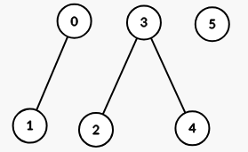
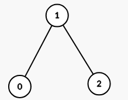

| Category | Difficulty | Likes | Dislikes |
|---|---|---|---|
| Algorithms | Medium | 90 | 14 |
array | hash-table | depth-first-search | breadth-first-search | union-find | graph
You are given a 2D integer array properties having dimensions n x m and an integer k.
Define a function intersect(a, b) that returns the number of distinct integers common to both arrays a and b.
Construct an undirected graph where each index i corresponds to properties[i]. There is an edge between node i and node j if and only if intersect(properties[i], properties[j]) >= k, where i and j are in the range [0, n - 1] and i != j.
Return the number of connected components in the resulting graph.
Example 1:
Input: properties = [[1,2],[1,1],[3,4],[4,5],[5,6],[7,7]], k = 1
Output: 3
Explanation:
The graph formed has 3 connected components:

Example 2:
Input: properties = [[1,2,3],[2,3,4],[4,3,5]], k = 2
Output: 1
Explanation:
The graph formed has 1 connected component:

Example 3:
Input: properties = [[1,1],[1,1]], k = 2
Output: 2
Explanation:
intersect(properties[0], properties[1]) = 1, which is less than k. This means there is no edge between properties[0] and properties[1] in the graph.
Constraints:
1 <= n == properties.length <= 1001 <= m == properties[i].length <= 1001 <= properties[i][j] <= 1001 <= k <= m